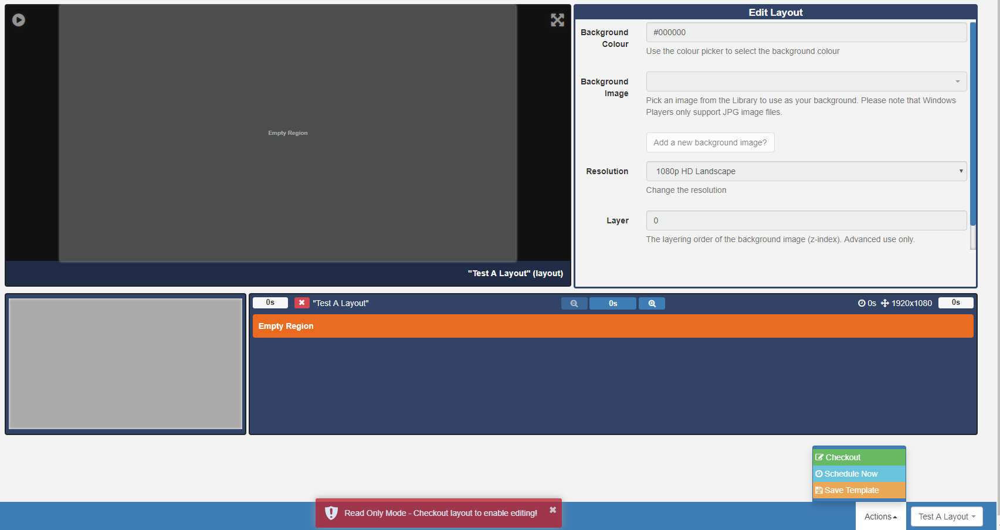
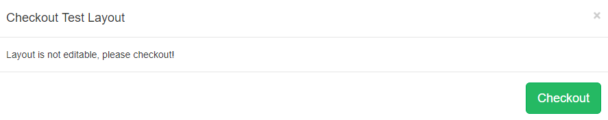
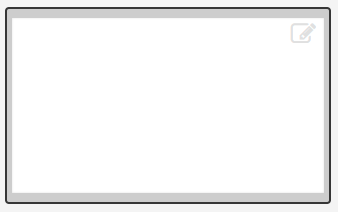
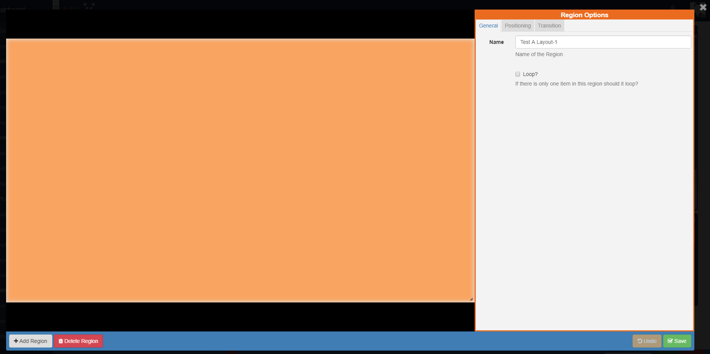
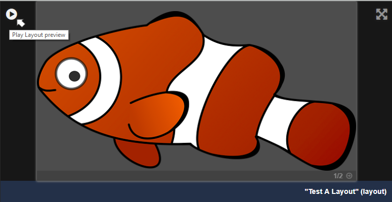
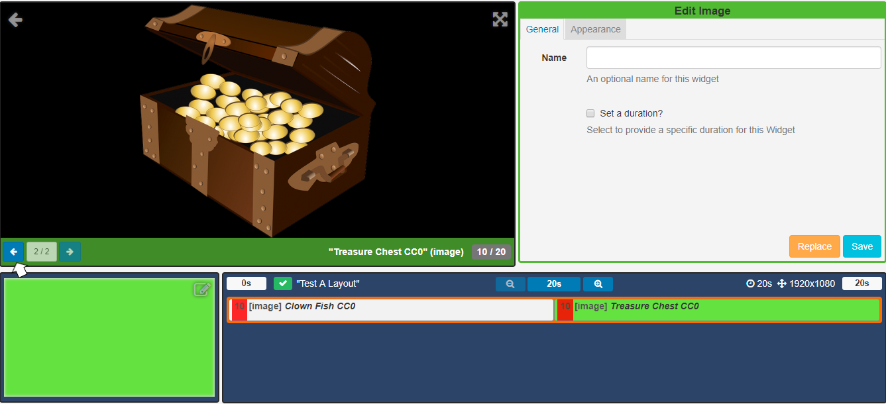
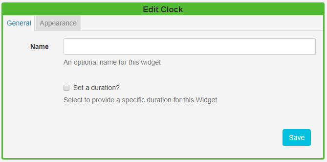
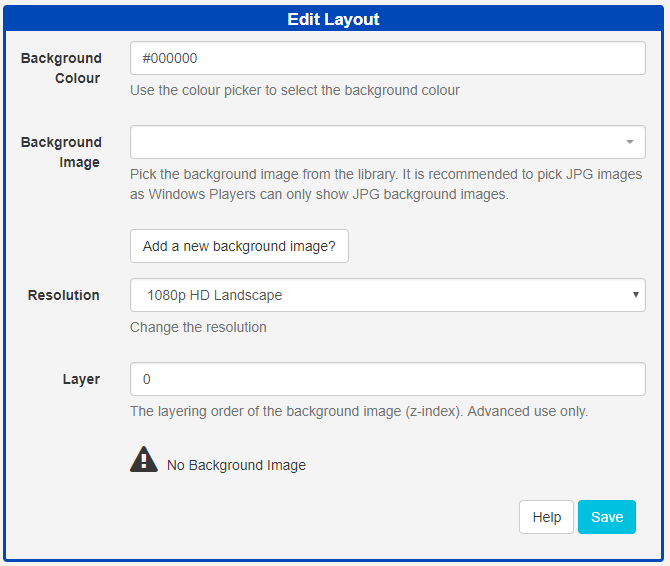
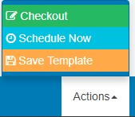
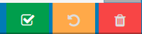

Layout Designer (New Features for v2)
The Layout Designer is the heart of content creation in Sfc technology. Each time a new Layout is added, or an existing one needs a design change, the Layout Designer is used.
If you are using the 1.8 series CMS, please use the following link: Layout Designer 1.8
SFC Technology makes layout design simple through the use of drag and drop,interactive previewing and design flexibility. On adding a new Layout the Layout Designer will open in Read Only Mode.

All newly created Layouts have a 'Published' status by default. This allows for quick and easy creation to scheduling if creating from a Template or importing a designed layout. Layouts with a valid status can be scheduled straight away!
To enable editing click on the Actions menu located at the bottom right of the toolbar, and click on Checkout. A confirmation form will appear, click on the Checkout button to continue.
Clicking on the 'Read Only Mode' pop up at the bottom of the window will also 'Checkout'.

The Layout Designer will open and confirm that the Layout has been 'checked out' ready for editing.
Layout Navigator
This is located in the bottom corner of the Layout Designer window. As shown in the above image, all new Layouts, by default, have one full screen empty Region, represented as a semi-transparent overlay. The Layout Navigator is used to add, position and resize Regions and gives an overview to the overall layout design.

Clicking on a Region in the opened Layout Navigator window, opens the Region Options form which allows for refinement of Positioning and the application of Transitions.

Layout Timeline
Located next to the Layout Navigator the Layout Timeline displays the duration of individual Widgets as well as complete layout duration which is based on the longest running region on the layout.
A status indicator is shown (cross or tick) to identify valid and invalid Layouts. Invalid layouts will be excluded from the Schedule and will not be played.
A Layout must contain at least one Region and each Region must contain at least one media item for it to be valid and play when scheduled.

Preview
Preview your Layout, Widgets and Regions and make the necessary alterations to designs to ensure that everything plays as intended. Click on the Play icon located in the top left of the Preview window to Preview your Layout. Toggle to full screen size by clicking the icon in the top right hand corner of the Preview window.

Click on a Widget to view media in the Preview window. Use the arrows to cycle through all Widgets that have been assigned to that Region.

Click on the back arrow in the top right hand of the Preview window to return to the Layout Preview.
Editor
Edit aspects of your Layout and assigned Widgets. Click on assigned Widgets from the Layout Timeline window to open the edit options available for that media item.

Use the arrow in the top right hand corner of the Preview window to return to the Layout and Edit Layout form.

Widgets can be edited by clicking on assigned Widgets on the Layout Timeline window to open the options available for that media item.
Toolbox
Located on the bottom left of the toolbar assign actions using Tools, add Widgets and search for Library media items to add to Layouts.
Actions
Located on the bottom right of the toolbar, select from the menu of Actions that can be performed for Published Layouts.

-
Checkout - enable editing by putting the published Layout into a draft status.
-
Schedule Now - schedule published Layouts onto one or more Displays directly from the Layout Designer.
-
Save Template - save your published designs by creating a Template for reuse. Saving a template will store an exact copy of the Layout, including Regions, Playlists and media.
Invalid Layouts cannot be published.
Layouts that have been 'checked out' and are in a draft status have action buttons to Publish, Undo and Delete, located on the bottom right of the toolbar. 
Layout Selector
The Layout selector provides easy navigation between all Layouts the logged in User has permission to edit without having to leave the Layout Designer screen.
The toolbar has a memory so that when you next open SFC Technology you can pick up exactly where you left off.